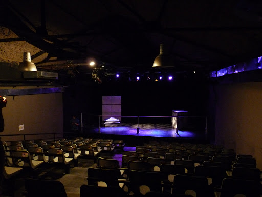

Bienvenidos
“El Tinglado” es un sueño que se convirtió en realidad, un nuevo teatro en la ciudad autónoma de Bs. As. Conservando la estructura original de un viejo taller mecánico que allí funcionaba, creamos un ámbito moderno, dedicado a la cultura, donde las ideas y la creatividad tengan una posibilidad de expresión. Se propone acercar a todas las manifestaciones artísticas de la sociedad en su diversidad de lenguajes, ubicado en Mario Bravo 948 en el barrio de Palermo.
Nuestra Filosofía
- Nuestro propósito es acercar la cultura a la gente ofreciendo un nuevo espacio que nos permite:
- Fomentar el aprendizaje y desarrollo de distintas disciplinas artísticas.
- Acercar a las grandes expresiones del teatro nacional y universal al público.
- Promover el encuentro e intercambio entre artistas y espectadores.
- Abrir las puertas al mundo de la imaginación la reflexión, la creatividad, la expresión y el juego en un marco de respeto y libertad.
- Sembrar y profundizar en el público el interés por la cultura y el arte.
- Acompañar el desarrollo y la experimentación de jóvenes talentos.
Testimonios
"Hermoso y cómodo teatro"
Nestorfabian@gmail.com
"Muy buenos talleres"
Gisellasirera@hotmail.com
"Me encanto el bar del lugar!!!"
Nazarena@outlook.com